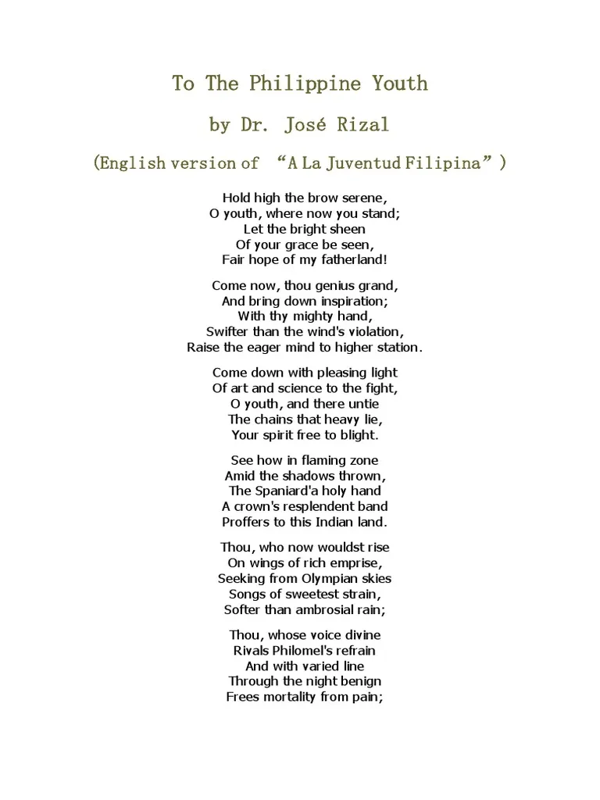
Poems
From the prize-winning “A la Juventud Filipina” (1879) to “A las flores de Heidelberg” (1886) and the final farewell (1896), his verse traces a young man’s hope turning into resolve.
How a boy from Calamba, shaped by his family, his schooling, his travels, his pen, and the choices he made under pressure, came to be remembered as a national hero.
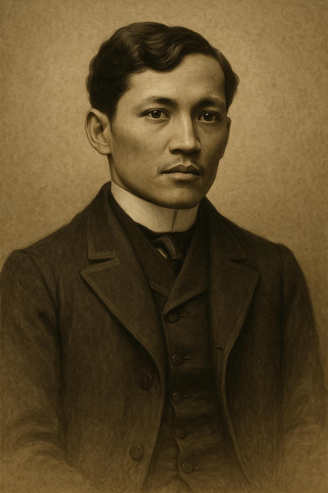
At about seven in the morning on December 30, 1896, a crowd gathered on the open field of Bagumbayan, just outside the walls of Manila. The man brought there was thirty-five years old, a physician by training, who had written two novels, a handful of poems, and a great many essays and letters. He held no office. He had never led an army.
Thirty-five years earlier, he had been born in Calamba, Laguna, into a family that farmed leased land and kept books in the house. Nothing in that beginning promised a monument in a public park, a national holiday, or a law that now asks Filipino students to study his life.
So how did the one become the other? This storybook does not give you the answer at the start. It follows the evidence, one chapter at a time: a mother’s lessons, a classroom, a ship’s deck, a printing press, a small town in Mindanao, and a last walk across Manila. Along the way you can stop and ask why a moment mattered, listen to the story read aloud, and decide for yourself how the pieces fit together.
Each chapter follows one part of Rizal’s life: son, student, traveler, writer, reformer, exile, prisoner, and finally symbol. Open them in any order.
Buttons such as “Why did this matter?” open short explanations that separate what the records show from what historians interpret.
Use the voice reader to hear any chapter while the words are highlighted, open the picture galleries, and click through the timeline below.
You do not have to read in order. Choose the part of Rizal’s life you are most curious about, then follow the arrows at the end of each chapter.
A family of readers, a mother who taught him first, and the year 1872 when the world grew darker.
Open chapterFrom Biñan to Ateneo, Santo Tomas, Madrid, Paris, and Heidelberg: how an education sharpened his questions.
Open chapterTen stops across three continents, and what each one taught him about his own country.
Open chapterTwo novels, essays, poems, and letters: why he chose the printed page.
Open chapterThe Propaganda Movement, La Liga Filipina, and what he actually asked for.
Open chapterDoctor, teacher, engineer, and naturalist: four years that were anything but idle.
Open chapterFrom a ship bound for Cuba to the field at Bagumbayan, told plainly and in order.
Open chapterConnecting the evidence, weighing the debates, and asking what it means for young Filipinos today.
Open chapterFlashcards, a quiz, a timeline challenge, key terms, and a searchable bank of verified facts. Earn XP as you go.
Start reviewingAsk questions about Rizal. Pluma only answers about Rizal, only from verified facts, and shows its sources.
Ask a questionSelect a milestone to read a short explanation, then jump to the chapter that tells the full story.
José Rizal is born on June 19, 1861, the seventh of eleven children of Francisco Mercado and Teodora Alonso.
Teodora Alonso is arrested on a criminal charge and held for more than two years. Her son José is ten years old.
Rizal begins at the Ateneo Municipal in Manila. In February, three Filipino priests, Gómez, Burgos, and Zamora, are executed.
His poem “A la Juventud Filipina” wins first prize in a Manila literary contest.
On May 3, Rizal leaves Manila for Spain to continue his medical and philosophical studies.
His first novel is printed in Berlin in March, paid for with a loan from his friend Máximo Viola.
He begins writing for the reform newspaper that Filipinos publish in Spain, using the pen names Laong Laan and Dimasalang.
His second novel is printed in Ghent, Belgium, and dedicated to the memory of Gómez, Burgos, and Zamora.
In July he founds La Liga Filipina in Manila, is arrested within days, and is exiled to Dapitan in Mindanao.
Arrested in October while on his way to serve as a doctor in Cuba, he is returned to Manila, tried by court-martial in December, and sentenced to death.
He is executed by firing squad at Bagumbayan, Manila, at the age of thirty-five.
Republic Act No. 1425 directs schools, colleges, and universities to teach the life, works, and writings of Rizal, especially his two novels.
Look for the gold buttons inside each chapter. Each one opens a five-part explanation: what happened, why it mattered, how it influenced Rizal, what he did next, and how it fits his path to heroism.
Press “Read this chapter” or the small speaker beside a paragraph. The words light up as they are spoken. Speed and voice are in the Voice reader panel at the bottom of the screen.
The Review tab builds flashcards and quizzes from the same verified facts as the chapters. Every answer shows where it came from, and every point earns XP.
Pluma answers questions about Rizal only, using only the verified fact bank. If the facts do not cover a question, it tells you instead of guessing.
Every picture frame opens a larger viewer. The frames are placeholders for now, clearly marked, and ready for verified historical photographs.
A family of readers, a town beside a lake, and the first lessons in what fairness looks like and what it costs.
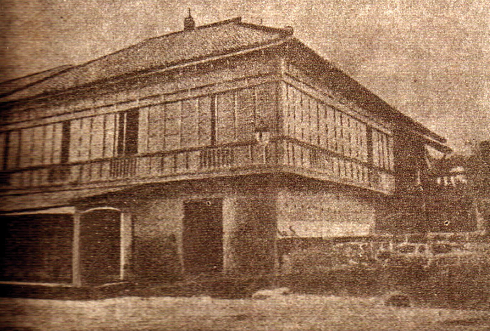
June 19, 1861, Calamba, Laguna
José Protasio Rizal Mercado y Alonso Realonda was born in Calamba, Laguna, the seventh of eleven children of Francisco Mercado and Teodora Alonso.[1] His siblings, in birth order around him, were Saturnina, Paciano, Narcisa, Olimpia, Lucia, Maria, Concepcion, Josefa, Trinidad, and Soledad.
The family leased farmland from a hacienda owned by the Dominican order. It was a living, and a comfortable one by the standards of the town, but it rested on a relationship of rent and obligation that would later turn into open conflict. The Mercados owned books, spoke Spanish and Tagalog, and sent their children to school. They were also, like every Filipino family of the period, subject to the decisions of a colonial government and a powerful Church.
That mixture, security and dependence side by side, is a useful thing to keep in mind. It meant that young José grew up close to privilege and close to its limits at the same moment.
1860s, At home
Rizal’s first teacher was his mother. Teodora was unusually well educated for a woman of her time and place, and by his own later account she taught him his earliest lessons, including reading, and encouraged his love of poetry.[3] His elder brother Paciano, ten years older, had studied in Manila and was close to the priest José Burgos. Paciano became the young man’s adviser and, later, the family’s steady link to the world of Manila.
In 1869, when he was eight, José was sent to the nearby town of Biñan to study under a private teacher, Justiniano Aquino Cruz. By his own recollection he did well. He also sketched, modeled figures in clay, and wrote verse.
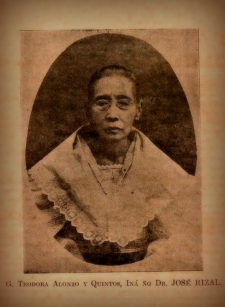
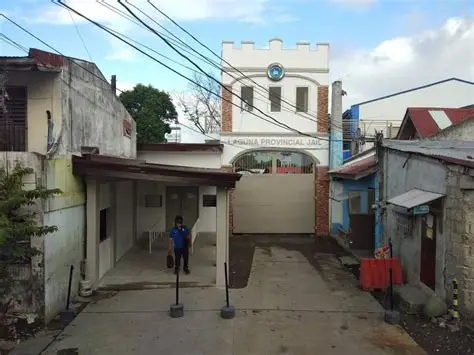
1871–1872, Calamba, Santa Cruz, and Manila
In 1871 Teodora was accused in a criminal case and jailed in Santa Cruz, the provincial capital. She was held for more than two years before she was released.[1] The family regarded the charge as unfair. Rizal was ten. The episode showed him, in the most personal way possible, that an educated and respected woman could be imprisoned with very little protection.
A few months later, in February 1872, three Filipino priests, Mariano Gómez, José Burgos, and Jacinto Zamora, were executed in Manila after a mutiny at the Cavite arsenal. Accounts disagree about how far they were involved, and many Filipinos then and later believed they had been wrongly condemned. Paciano had been close to Burgos. Nineteen years later, Rizal dedicated his second novel to their memory.
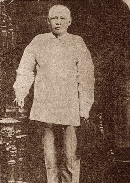

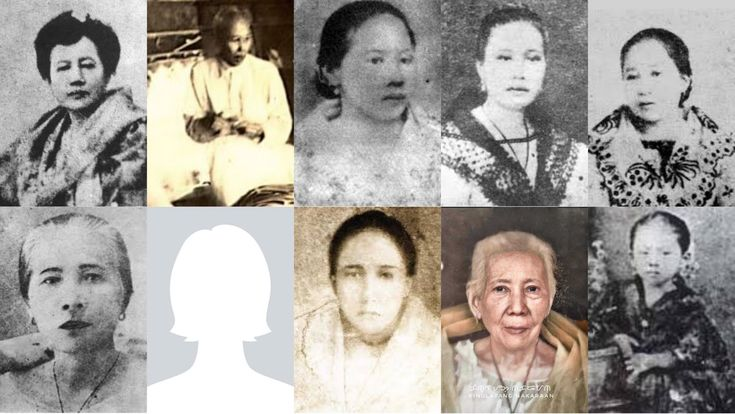
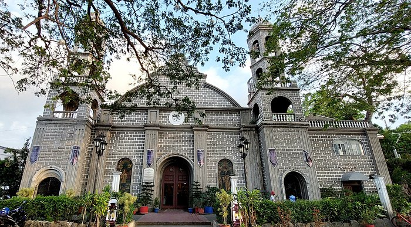
Open any card for more detail. Every claim here is drawn from the verified fact bank used by the Ask tab, and the sources are listed at the end of each card.
Rizal’s paternal line traced back to Lam-co, a Chinese merchant from Fujian who settled in Calamba in 1697. His mother’s side included Chinese mestizo and Spanish lines, and Japanese ancestry too. The family lived in a bahay na bato near the town plaza, a sign of their standing in Calamba.
In 1849 Governor-General Narciso Clavería ordered Filipinos to take surnames from an official catalogue. The Mercado family added Rizal, from a Spanish word for a green field ready to harvest, but kept using Mercado. At the Ateneo, Rizal enrolled as José Protasio Rizal, dropping his other names on the advice of his brother and family, and later wrote that it made him look illegitimate. By 1891, he wrote, the name Rizal had come to mean persecution, and he wanted to be worthy of it.
Teodora taught him the alphabet at about three, and he could read and write by five. His father gave him a pony named Alipato for his seventh birthday, and he had a black dog named Usman. At seven he went on a pilgrimage to Antipolo, which Austin Craig called his first real journey. As a boy he wrote a Tagalog drama that so impressed a visiting municipal captain of Paete that he paid Rizal two pesos. In 1865 his sister Concepcion died, which Craig called his first sorrow.
Nobody in Calamba owned the land; the Dominican Order did. When residents struggled financially the friars raised the rent, a decision Rizal’s father, Francisco Mercado, opposed. Years later the dispute reached the courts, and the Calamba tenants and the Rizal family were evicted. Chapter 5 returns to this story.
Sources: [19]
Rizal’s father, who leased a hacienda and a rice farm from the Dominican Order and opposed rent increases.
His mother and first teacher; jailed in 1871 for about two and a half years.
His older brother, who had lived with Father José Burgos and secretly helped Rizal leave for Spain.
The strict teacher in Biñan under whom Rizal studied from 1869.
One of the three priests executed in February 1872, whose memory Rizal honored in El Filibusterismo.
Alipato, a gift from his father for his seventh birthday. [19]
The school year had already started when he applied; he was admitted after his brother sought help. [19]
Two pesos, from a municipal captain of Paete who saw his Tagalog drama. [3]
Father Rufino Collantes baptized him in Calamba’s parish church on June 22, 1861. [19]
Ten years of classrooms and clinics, and the habit of asking why things were the way they were.
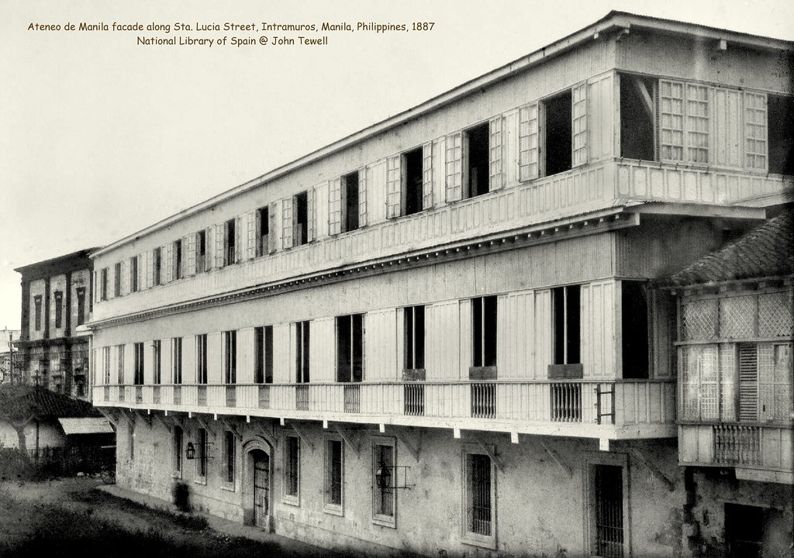
1872–1877, Intramuros, Manila
Rizal entered the Ateneo Municipal de Manila in 1872, the same year the three priests were executed. The school, run by the Jesuits, trained students in Latin, Spanish, rhetoric, philosophy, and the sciences, and it rewarded effort with marks, medals, and public recognition. One teacher, the Jesuit Francisco de Paula Sánchez, left a lasting impression on him and encouraged his writing.[1]
He finished his Bachelor of Arts in 1877 with the highest marks. For the story of his heroism, the Ateneo matters less for the medals than for the toolkit: precise language, the discipline of composition, and the confidence that a Filipino student could compete on the same terms as anyone.
1877–1882, Santo Tomas, Manila
In 1877 Rizal enrolled at the University of Santo Tomas, first in philosophy and letters and then in medicine (most accounts say from 1878). His reasons were partly personal: his mother’s eyesight was failing, and he hoped to study ophthalmology.
His recollections and letters, which biographers rely on, describe disappointment with some of the teaching methods at the university and a sense that Filipino students were often treated as inferiors by some Spanish teachers. Whatever the exact details, this was the setting in which he began to write for a public. In 1879 his poem “A la Juventud Filipina” won first prize in a Manila literary competition. In 1880 his allegorical play “El Consejo de los Dioses” won another.
“bella esperanza de la Patria mía”
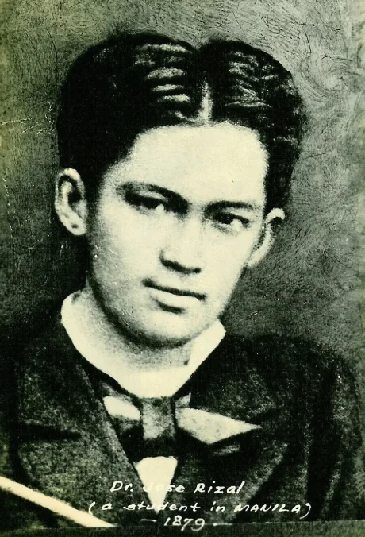

1882–1886, Madrid, Paris, Heidelberg
On May 3, 1882, Rizal left Manila for Spain. In Madrid he studied medicine and philosophy and letters at the Universidad Central, attended art classes, practiced fencing, and learned languages. He finished the medical course in 1884 and the philosophy and letters course in 1885. He also joined a circle of Filipino students and writers who compared notes on what they saw.
In Madrid, debates about government, religion, and rights were conducted more openly than in Manila. For a Filipino student, that contrast was itself an education. It is also where he began to draft his first novel.
He then went to Paris in 1885 to study eye surgery in the clinic of Louis de Wecker, and to Heidelberg in 1886 to work with the ophthalmologist Otto Becker. The choice of ophthalmology tied together two of his motives: a mother who was losing her sight, and a belief that knowledge was meant to be used.
Studies in Biñan under Justiniano Aquino Cruz.
Enters the Ateneo Municipal de Manila.
Bachelor of Arts from the Ateneo; enrolls at the University of Santo Tomas.
Switches to medicine at Santo Tomas (about this year in most accounts).
“A la Juventud Filipina” wins first prize.
Sails for Spain; enrolls at the Universidad Central de Madrid.
Completes the medical course in Madrid.
Completes philosophy and letters; moves to Paris to study ophthalmology.
Works with Otto Becker in Heidelberg.
Prints his first novel in Berlin and begins to practice as an eye doctor.


Open any card for more detail. Sources are listed at the end of each card.
Rizal was almost refused entry because the term had begun. Once in, he repeatedly ranked first, won gold medals, and became a boarding student in 1875. He graduated on March 23, 1877. While at Santo Tomas he also studied land surveying at the Ateneo, but his title was issued only on November 25, 1881, because he was underage when he passed.
Sources: [19]
Rizal first enrolled in philosophy and letters, partly because his father wanted it. When he learned that his mother was going blind, he moved to medicine. In Heidelberg he studied eye diseases under Professor Otto Becker and used the newly invented ophthalmoscope, which he later used to operate on his mother. He wrote home that he spent half of each day on German and half on diseases of the eye.
Sources: [19]
In Madrid Rizal depended on an allowance from Paciano and spent spare money on books. He took private lessons in French, German, and English, and practiced painting, sculpture, fencing, and shooting. He joined the Círculo Hispano-Filipino. On June 24, 1884, he toasted the painters Juan Luna and Félix Resurrección Hidalgo after their prizes, saying that talent is not limited by skin color or birthplace. The speech was printed in Spain.
Sources: [19]
“A la Juventud Filipina” won a 1879 contest of the Artistic-Literary Lyceum of Manila. In 1880 his allegorical play “El Consejo de los Dioses” won the Lyceum’s contest, and his zarzuela “Junto al Pasig” was performed at the Ateneo. Rizal also left for Spain in 1882 without his parents’ knowledge, secretly backed by Paciano and an uncle, Antonio.
Sources: [19]
Jesuit professor at the Ateneo whom Rizal admired; later one of the Jesuits who tried to bring him back to the Church in Dapitan.
Heidelberg ophthalmologist under whom Rizal studied eye diseases.
Painter honored by Rizal’s 1884 toast in Madrid.
Painter honored alongside Luna in the same toast.
Sent Rizal an allowance in Madrid and quietly supported his departure.
March 23, 1877, with a Bachelor of Arts. [19]
He learned that his mother was going blind. [19]
He became a Freemason and was made a Master Mason in 1884. [19]
That he spent half of each day studying German and half studying eye diseases. [19]
Ten stops across three continents, and what each one taught him about his own country.
Rizal spent about ten of his thirty-five years abroad or between journeys. Naming the places is easy. The more useful question is what each place gave him that Manila could not. Three things keep returning: comparison, because he could see how other societies governed themselves and treated one another; community, because he found Filipino and European friends who took his ideas seriously; and freedom to publish, because he could print books abroad that could not have been printed at home.[1]
Schematic only, not to scale. Select a stop to jump to its story.
Rizal sailed from Manila on May 3, 1882, and reached Marseille on June 12 and Spain on June 16 after calling at ports that included Singapore, Colombo, and Suez. It was his first time outside the Philippines. Several of those ports belonged to other colonial powers, which gave him an early and quiet chance to compare how different empires looked from the harbor.
He studied, drew, fenced, and argued with fellow Filipinos. Spain showed him a society where church and state could be openly debated and where some Spaniards sympathized with Filipino grievances. It was also where he began drafting Noli Me Tangere.
In Paris he trained under Louis de Wecker; in Heidelberg he worked with Otto Becker and wrote the poem “A las flores de Heidelberg.” Staying with a pastor’s family in the nearby village of Wilhelmsfeld, he saw ordinary German village life and made friends who stayed in touch.
In Berlin he joined scholarly societies, met the physician and anthropologist Rudolf Virchow and the ethnologist Feodor Jagor, presented a paper on Tagalog verse, and finished Noli Me Tangere, which was printed there in March 1887.
He visited the Bohemian teacher Ferdinand Blumentritt in Leitmeritz, now Litoměřice in the Czech Republic. Blumentritt had been writing to him about Philippine languages and history, and the two remained correspondents for the rest of Rizal’s life. Then Rizal traveled on through Prague and Vienna.
Rizal returned to the Philippines in August 1887. He treated patients, but he also faced official scrutiny over his novel and was drawn into a growing dispute over the Dominican hacienda. In February 1888 he left again, partly on the advice of family and friends who thought staying was unsafe.
He passed through Hong Kong and spent about six weeks in Japan, an Asian country that was modernizing quickly, before crossing the United States on his way to England. For a Filipino, seeing an independent Asian nation hold its own among world powers was worth noting.
Living in Primrose Hill, where a blue plaque now marks the house,[16] Rizal worked in the British Museum, read rare books on Philippine history, and prepared his annotated edition of Antonio de Morga’s 1609 history of the islands, published in Paris in 1890.
He wrote essays for La Solidaridad, finished El Filibusterismo, and, with help from his friend Valentín Ventura, had it printed in Ghent, Belgium, in September 1891.
He practiced as an eye doctor and drafted plans for a settlement of Filipino families in North Borneo, an idea that never went ahead. In June 1892 he returned to Manila, where within weeks he founded La Liga Filipina and was arrested.
Rizal did not come home a convert to Europe. He admired its libraries, laboratories, and public debate, and he also saw that the same powers that prized liberty at home ruled colonies abroad. What the journeys gave him was a wider set of comparisons: he could now measure the Philippines against other societies, and he could argue with evidence rather than with resentment alone. That shift, from private frustration to reasoned public argument, runs through everything he wrote next.
Historian’s note. The last two sentences are an interpretation. Rizal’s letters and essays show him comparing societies, but biographers differ on how much weight each journey deserves.
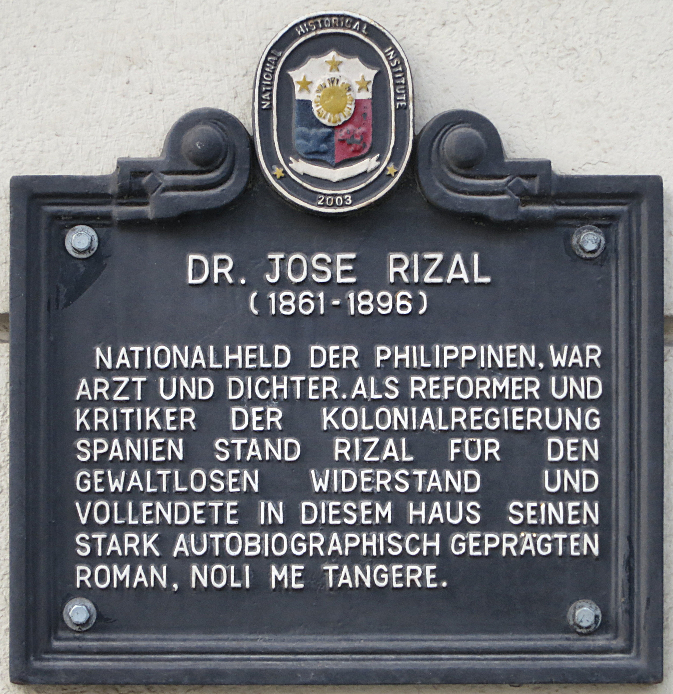

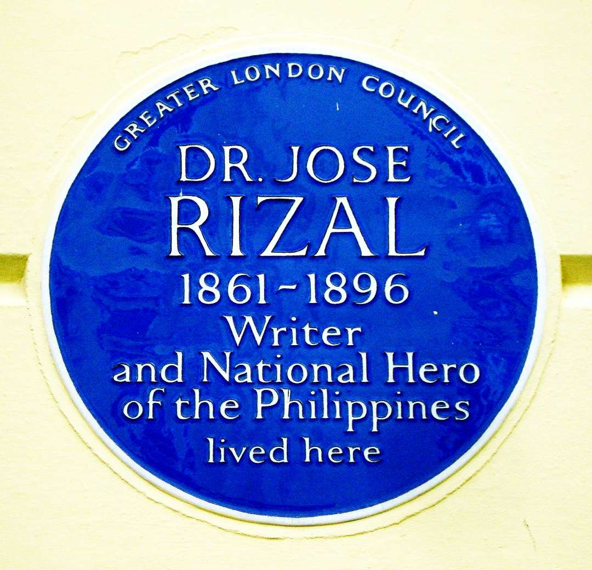
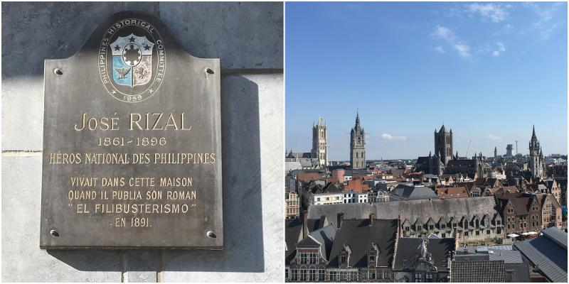
Open any card for more detail. Sources are listed at the end of each card.
Rizal left Manila on the steamship Salvadora for Singapore, then took the French ship Djemnah to Europe, calling at Colombo and passing through the Suez Canal. The ship docked at Marseille on June 12, and a train took him on to Spain, where he arrived on June 16. A suite at the Grand Oriental Hotel in Colombo is named after him because he stayed there in May 1882.
Sources: [19]
In Heidelberg Rizal studied under Otto Becker. He also stayed in the village of Wilhelmsfeld with the family of Pastor Karl Ullmer. Many years later the sandstone fountain from the pastor’s garden was given to the Philippine government and now stands in Rizal Park, Manila. In 1886 Rizal also translated Schiller’s William Tell into Tagalog.
Sources: [19]
In London Rizal lived at 37 Chalcot Crescent in Primrose Hill, where a blue plaque now stands, and became a regular guest of Reinhold Rost of the British Museum’s India Office. From December 1891 to June 1892 he lived in Hong Kong at Rednaxela Terrace and ran an eye clinic at 5 D’Aguilar Street from 2 to 6 p.m.
Professor in Austria-Hungary who translated Noli into German, wrote the preface to El Filibusterismo, and corresponded with Rizal.
Berlin physician and anthropologist who delivered a eulogy for Rizal after his death.
Pastor of Wilhelmsfeld, Germany, whose family hosted Rizal.
Philologist at the British Museum’s India Office who welcomed Rizal in London.
Friend from Bulacan who lent Rizal money to print Noli Me Tángere.
Four times: 1882, 1887, 1891, and 1896. [19]
In Berlin, on February 21, 1887, after starting it in Madrid in 1884. [6]
Chicago. [19]
He translated it into Tagalog in 1886. [19]
When petitions could be ignored and newspapers censored, Rizal turned to the book.
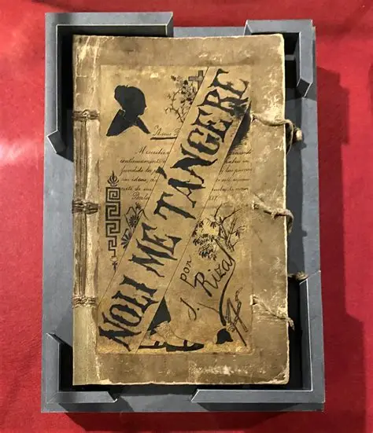
By the 1880s the routes for openly criticizing colonial conditions were narrow. Petitions could be ignored, newspapers were censored, and organizing was risky. A book printed abroad offered something different. It could not easily be stopped at the border of one colony, it could be read by Spaniards and Filipinos alike, and it could make an argument through people and stories instead of slogans. Rizal wrote mainly in Spanish, the language of the officials and educated readers he hoped to persuade.
1884–1887, Madrid, Paris, Germany
Rizal began the novel in Madrid in 1884 and finished it in Berlin. It was printed there in March 1887, in a first edition of about two thousand copies, paid for with a loan from his friend Máximo Viola.[1] The title is Latin for “touch me not,” and he dedicated the book “A mi patria,” to my fatherland.
The story follows Crisóstomo Ibarra, who returns to a Philippine town after years in Europe, hoping to build a school. He finds that his father died in disgrace and that powerful friars and officials stand in his way. Around him are María Clara, Elías, Sisa, Padre Dámaso, and a gallery of townspeople who profit from, fear, or suffer under the system. The book condemns abuse of power by some members of the religious orders and officials, but it is just as hard on the colonial elite’s vanity and silence.[6]
Authorities and Church officials restricted its circulation in the Philippines. Copies still found their way in, and readers talked about it.
1891, Ghent, Belgium
The sequel is darker. Set about thirteen years later, it brings Ibarra back as the wealthy jeweler Simoun, who plots a violent revenge, while students such as Isagani and Basilio argue over schools, language, and reform. Simoun’s plan fails, and the novel is doubtful about both abusive power and violent answers to it.[7]
Rizal finished it in 1891 and had it printed in Ghent, with help from his friend Valentín Ventura. He dedicated it to the memory of the priests Gómez, Burgos, and Zamora. That dedication was later cited among the grounds of accusation against him in 1896.[7]
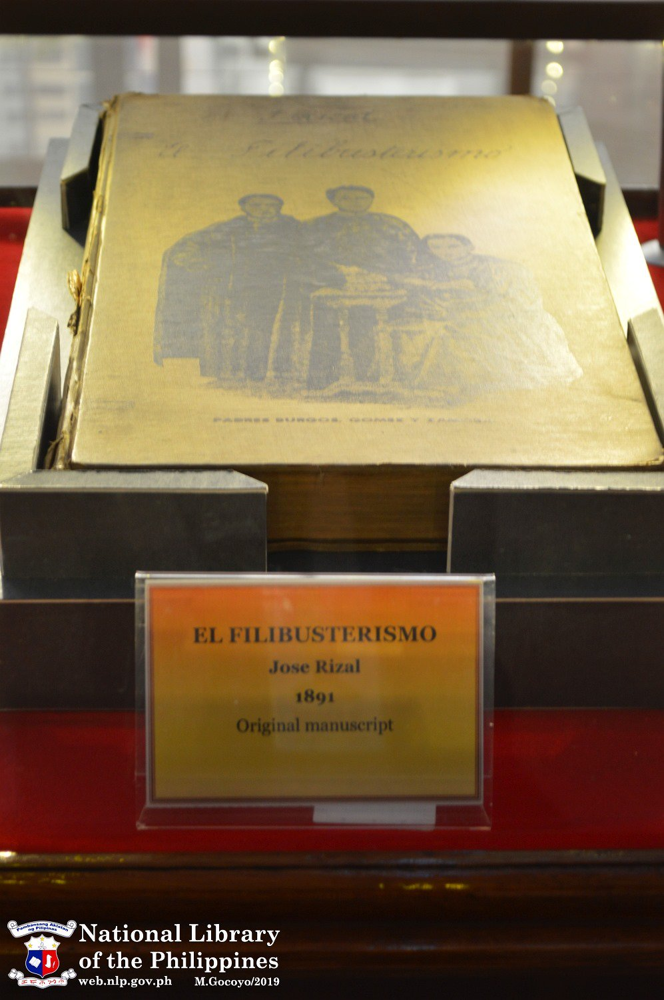
1889–1890, Essays
Rizal also wrote essays, many for La Solidaridad. In “The Philippines a Century Hence” he reasoned about where continued neglect and injustice might lead the colony. In “The Indolence of the Filipino” he answered the stereotype that Filipinos were naturally lazy by pointing to forced labor, poor incentives, a limited education, and the climate. And in 1890 he published an annotated edition of Antonio de Morga’s early history of the islands, using a Spanish source to show that Filipinos had a developed society before Spain arrived.
His 1889 letter in Tagalog to the young women of Malolos praised their petition for a night school and urged them to value education and independent thinking.
Adiós, Patria adorada, región del sol querida,
Perla del mar de Oriente, nuestro perdido Edén.
A mi patria

From the prize-winning “A la Juventud Filipina” (1879) to “A las flores de Heidelberg” (1886) and the final farewell (1896), his verse traces a young man’s hope turning into resolve.
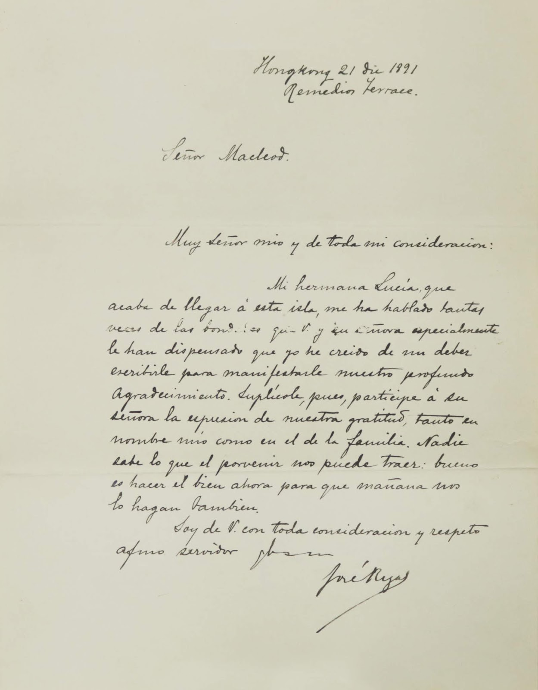
Hundreds of letters to family and friends, including a correspondence of about ten years with Blumentritt, are among the best evidence of what Rizal actually thought. Many are collected in the Epistolario Rizalino.
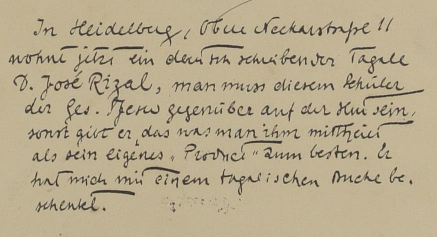
An unfinished Tagalog novel, Makamisa; a scholarly study of Tagalog verse presented in Berlin in 1887; sketches, sculpture, and notes from his years as a naturalist in Dapitan.
“A la Juventud Filipina” wins first prize.
“El Consejo de los Dioses” wins a literary prize.
Begins writing Noli Me Tangere in Madrid.
Noli printed in Berlin; paper on Tagalog verse presented.
Essays in La Solidaridad; Malolos letter; annotated Morga.
El Filibusterismo printed in Ghent.
Final poem written in Fort Santiago.
Open any card for more detail. Sources are listed at the end of each card.
Rizal began the novel in Madrid in 1884 and finished it on February 21, 1887. A Berlin printer produced 2,000 copies for 300 pesos, money lent by Máximo Viola. Copies came off the press in mid-March 1887, traditionally dated March 21. Rizal dedicated the book to his fatherland. Rizal is often said to have been inspired by Harriet Beecher Stowe’s Uncle Tom’s Cabin.
Rizal finished the manuscript in Biarritz on March 29, 1891, then moved to Ghent, where printing was cheaper, on July 5. Money ran short during printing, and Valentín Ventura sent funds. The novel came off the F. Meyer-Van Loo press on September 18, 1891. Rizal gave Ventura the original manuscript and an autographed copy; the Philippine government later bought the manuscript for 10,000 pesos.
Rizal’s dedication of El Filibusterismo to Gómez, Burgos, and Zamora gives February 28, 1872 as the date of their execution and lists ages that differ from other records. Most historians give February 17, 1872. Even great authors can be wrong about a date, which is why historians check several sources.
In El Filibusterismo, Ibarra returns as the jeweler Simoun, and a plot to bomb a wedding fails when Isagani throws the explosive lamp into the river. Near the end, Father Florentino says liberty will not be won at sword’s point but by making a people worthy of it. Critics have long debated what the novel says about violence; the Spanish thinker Miguel de Unamuno called Rizal “the Tagalog Hamlet.” Blumentritt wrote that the characters were drawn from life.
Rizal wrote essays such as “El amor patrio” (1882), “Filipinas dentro de cien años” (1889–90), and “Sobre la indolencia de los filipinos” (1890). His 1889 letter to the women of Malolos was in Tagalog. He left unfinished works including Makamisa. In La Solidaridad he used the pen names Laong Laan, Dimasalang, and May Pagasa. He also sculpted; The Triumph of Science over Death, a gift to Blumentritt, is at the Rizal Shrine in Fort Santiago.
Lent Rizal 300 pesos to print the first 2,000 copies of Noli.
Sent the funds that saved the printing of El Filibusterismo.
Translated Noli into German and prefaced El Filibusterismo.
Spanish writer who first insulted Rizal, then became an admirer and wrote his major biography.
Translator of the 1912 English editions of both novels now free on Project Gutenberg.
“Touch me not,” a Latin phrase from John 20:17. [19]
In Hong Kong in 1897, under the title “Mi último pensamiento.” [19]
Laong Laan, Dimasalang, and May Pagasa. [19]
Máximo Viola, a friend from Bulacan. [1]
What Rizal and his fellow reformers asked for, what they did to get it, and what we should not read back into their words.
The Propaganda Movement was a loose circle of Filipinos in Spain, and supporters at home, who wrote and lobbied in the 1880s and early 1890s.[8] Its members and supporters included Marcelo H. del Pilar, Graciano López Jaena, Mariano Ponce, and Rizal, with the painters Juan Luna and Félix Resurrección Hidalgo among the wider circle. They did not agree on everything, but their public demands were broadly similar: that the Philippines be represented in the Spanish parliament, that Filipinos and Spaniards be equal before the law, that Filipino priests be allowed to serve in parishes, and that free speech and a free press be respected.
For Rizal, education stood beside all of these. He argued that a people kept ignorant could not be fairly judged, and that schooling, including schooling for women, was the surest way to dignity and self-government.
A fortnightly newspaper, Barcelona and later Madrid, 1889 to 1895. This panel is a styled summary, not a reproduction of the original paper.
The first issue appeared on February 15, 1889. Graciano López Jaena edited it at first, and Marcelo H. del Pilar took over later. Its columns reported abuses in the colony, argued for the reforms listed above, and tried to explain the Philippines to Spanish readers and politicians.
Rizal contributed essays under the pen names Laong Laan and Dimasalang. Among them were “The Philippines a Century Hence” and “The Indolence of the Filipino,” which challenged the claim that Filipinos were lazy by pointing to the conditions under which they lived and worked.
The paper never had a large budget. It depended on donations and on the unpaid labor of its writers, and it closed in 1895.
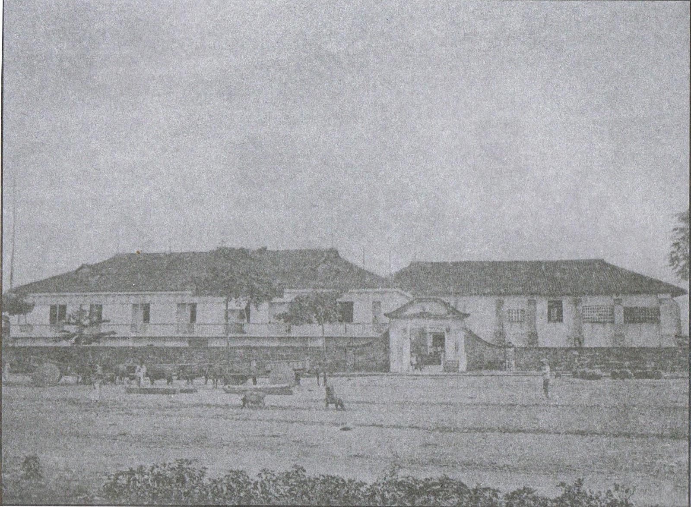
1888–1891, Calamba and Europe
While Rizal wrote in Europe, a dispute over the Dominican estate in Calamba grew into a public issue. Tenants, including his family, challenged rents and the estate’s claims. After legal proceedings, many families, Rizal’s among them, were evicted in the early 1890s. The affair made reform personal.
It also tested the movement. In 1890 a rivalry over leadership of the reform movement in Europe grew between Rizal and Marcelo H. del Pilar; most expatriates backed del Pilar. Rizal, who was never the movement’s only leader, moved to Hong Kong in late 1891. There he practiced medicine and, in 1892, drew up a plan for Filipino families to settle in North Borneo, a project that did not go forward.
July 3–7, 1892, Manila
Rizal returned to Manila in June 1892. On July 3 he met with a group of Filipinos in the Tondo district and founded La Liga Filipina, a civic league. Its stated purposes were to unite the islands into one community, to provide mutual protection, to defend its members against violence and injustice, and to encourage education, agriculture, and commerce.
Three days later he was arrested. The authorities said that anti-friar leaflets had been found among his sister’s belongings. On July 7 the governor-general ordered him banished to Dapitan, without a trial.

Filipino students in Madrid begin meeting and writing; Rizal joins them.
La Solidaridad publishes its first issue in Barcelona.
Rizal’s letter to the young women of Malolos.
“The Philippines a Century Hence” appears in installments.
“The Indolence of the Filipino” and the annotated Morga are published.
Rivalry with del Pilar over leadership; evictions at Calamba; Rizal moves to Hong Kong.
La Liga Filipina founded in Manila.
Rizal is arrested and ordered banished to Dapitan.
La Solidaridad ceases publication.
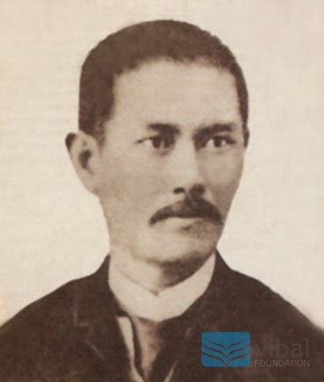
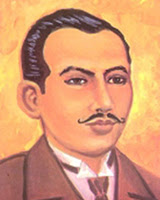
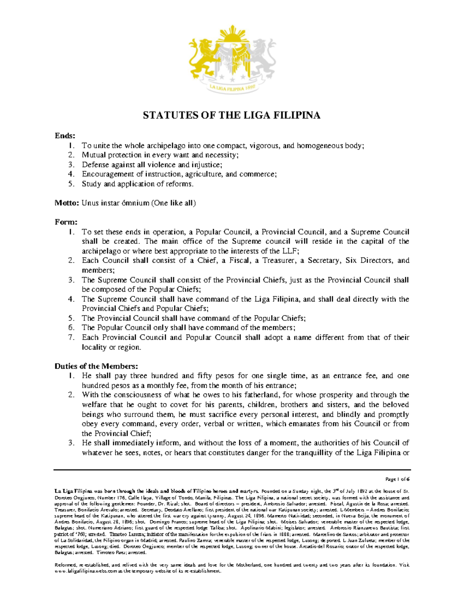
Open any card for more detail. Sources are listed at the end of each card.
Reformers sought Philippine representation in Spain’s Cortes, Filipino priests in parishes in place of Spanish friars, freedom of assembly and speech, and equal rights before the law for Filipinos and Spaniards. These were requests for change inside the Spanish system, which is why historians call the movement reformist.
The paper was first offered to Rizal’s editorship; Graciano López Jaena accepted it instead. Marcelo H. del Pilar replaced him on December 15, 1889. The paper moved from Barcelona to Madrid. When funds ran out, del Pilar largely paid for it himself and ended publication on November 15, 1895, after seven volumes.
The Spanish writer Wenceslao Retana wrote an article in a Madrid newspaper that insulted Rizal’s family. Rizal sent a representative to challenge him to a duel. Retana published an apology, later became one of Rizal’s biggest admirers, and wrote the important biography Vida y escritos del Dr. José Rizal (1907).
La Liga Filipina was founded on the evening of Sunday, July 3, 1892, in the house of Doroteo Ongjunco on Ilaya Street, Tondo. Its constitution listed five aims: unite the archipelago into one compact body; give mutual protection; defend against violence and injustice; encourage education, agriculture, and commerce; and study and apply reforms. After Rizal was banished, members split: the conservative group formed the Cuerpo de Compromisarios, which kept raising money for La Solidaridad, while radical members led by Andrés Bonifacio founded the Katipunan on July 7, 1892.
The Katipunan made Rizal its honorary president and used his name as a cry for unity and liberty, though he condemned the uprising. Historians disagree about a mid-1896 visit by the Katipunan emissary Pío Valenzuela: in his 1896 testimony Valenzuela said Rizal condemned armed struggle; years later he said Rizal would accept an uprising if Filipinos were well prepared, and that he had misstated it to protect Rizal. Rizal’s December 1896 manifesto argued that reforms should come from above, and that education and a national identity were prerequisites to freedom.
Editor of La Solidaridad from December 1889, who kept it alive until 1895; Rizal and he rivaled for leadership in 1890.
La Solidaridad’s first editor.
Member of La Liga Filipina who led its radical wing into the Katipunan.
Owner of the Tondo house where La Liga was founded.
Governor-General whose July 7, 1892 decree banished Rizal.
“One like all,” the motto of La Liga Filipina. [1]
Three: the Liga was founded on July 3, and he was arrested on July 6, 1892. [19]
Rizal. [19]
He apologized, became an admirer, and wrote the biography Vida y escritos del Dr. José Rizal. [4]
Four years in a small town in Mindanao, and none of them idle.
July 1892, Dapitan
Rizal arrived in Dapitan on July 17, 1892. He had been banished by order of the governor-general, without a trial, to a small coastal town in what is now Zamboanga del Norte. The local commandant, Ricardo Carnicero, was responsible for watching him, and the two got on well.[1]
It would be easy to read the exile as a pause. The record shows the opposite. Biographers report that a share in a lottery prize in 1892 gave him money to buy land at Talisay, a short distance from the town, where he built a house, a school, and a clinic. From that base he did an astonishing amount of practical work, and the work is the point: it shows what he did with his knowledge when writing and organizing were taken away.
Patients came from Dapitan and from far beyond it. He treated illnesses, performed eye operations, and operated on his mother’s eyes when she stayed with him.
He ran a small school at Talisay for boys, teaching languages, mathematics, the sciences, and practical skills, often alongside farm work.
He designed a water system to bring clean water to the town, and built a relief map of Mindanao in the plaza so residents could see the island’s shape.
He planted crops and fruit trees and encouraged local farmers to cooperate on how they produced and sold their goods.
He collected shells, insects, and animals, sent specimens to European scientists, and had several species named after him.
He studied local languages and kept up a heavy correspondence with friends and scholars, especially Blumentritt.
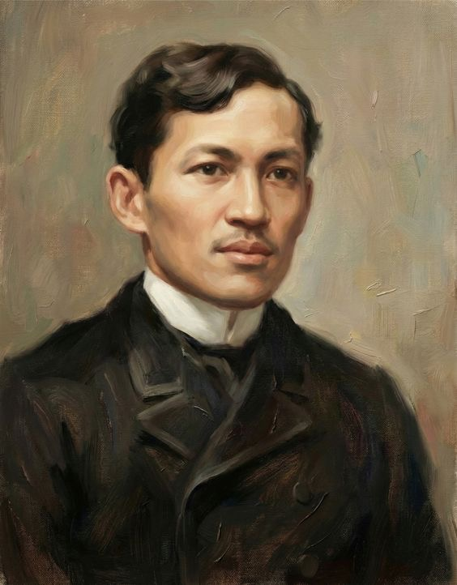
1893–1896, Talisay
The school at Talisay was small, but it carried much of what he valued. Lessons mixed languages, science, and arithmetic with work on the land. Students were expected to be useful as well as learned.
He also took in people from outside his own circle. Visitors, patients, and neighbors passed through, and in 1895 Josephine Bracken arrived from Hong Kong with her stepfather, who sought treatment for his eyes. She stayed, and she and Rizal lived together in Dapitan. In 1896 she lost a baby born prematurely.
1892–1896, Science and waiting
Rizal sent specimens to European museums, and species including a flying lizard, a beetle, and a frog were later named for him. He sketched, carved, and wrote to friends about plants and languages. He also kept asking to be released. In 1896 he offered his services as a doctor in Cuba, and the governor-general approved the request, which is how his exile ended.
Historian’s note. The exile was imposed, not chosen, and Rizal said as much in his letters. His Dapitan projects were modest in scale, and he pursued them partly for himself. What gives them meaning is the pattern: given a small town and few resources, he chose to teach, heal, and build there.
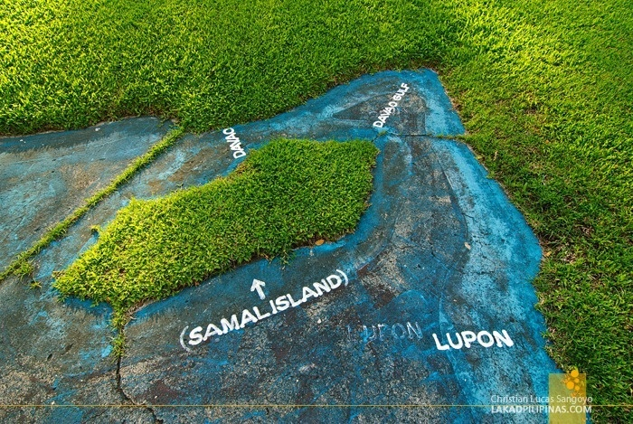
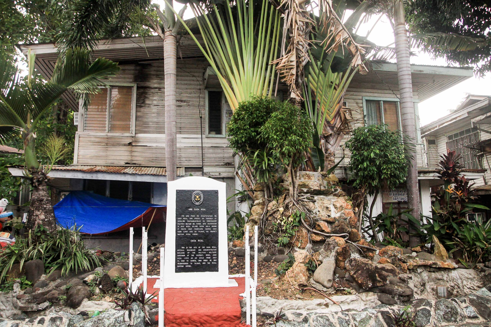
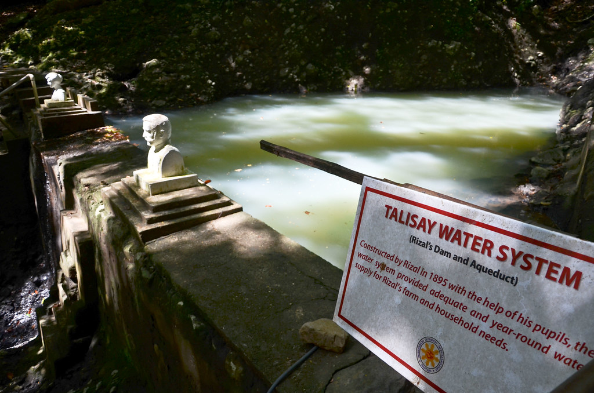
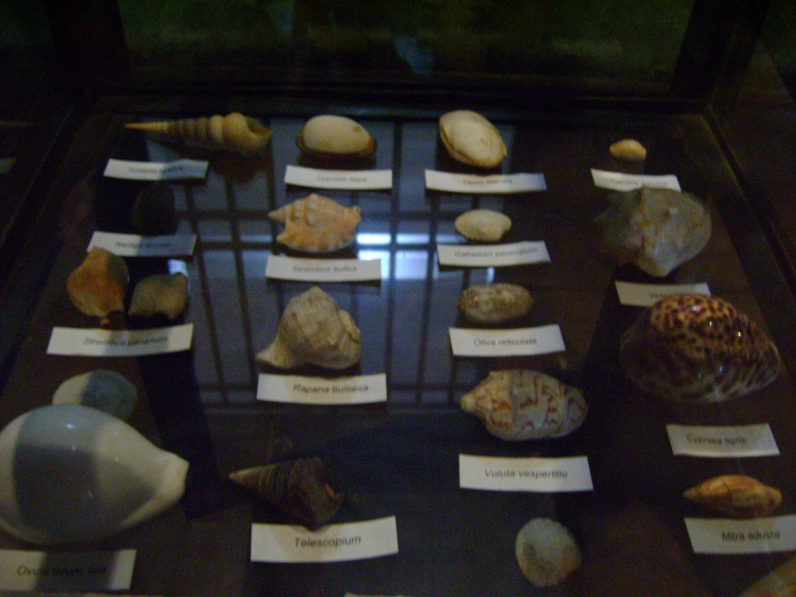
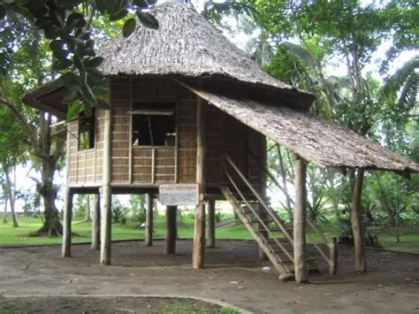
Open any card for more detail. Sources are listed at the end of each card.
On September 21, 1892, lottery ticket 9736, shared by Rizal, Carnicero, and Francisco Equilior of Dipolog, won second prize of 20,000 pesos. Rizal used part of his share to buy land in Talisay, about a kilometer from Dapitan. He described the layout himself: a square house for his mother, sister, and nephew; an octagonal house for his pupils; and a hexagonal house for his chickens.
Sources: [19]
Rizal built a water system, lined the plaza with trees, and made a large relief map of Mindanao opposite the church. He taught residents to fish with a net and amused them with simple magic tricks that some mistook for supernatural power. His boys’ school taught in Spanish and included English, which was unusual at the time.
Sources: [19]
Rizal sent specimens to the Dresden Museum, asking not for money but for scientific books, magazines, and surgical instruments. A flying lizard, a horned beetle, and a frog were named for him as Draco rizali, Apogonia rizali, and Rhacophorus rizali. Later researchers found that these names duplicated earlier ones, so they are now considered synonyms, but many other species have since been named in his honor. He also mentored carvers from Paete, including José Caancan.
Sources: [19]
Jesuits, including his former professor Francisco de Paula Sánchez and later Pablo Pastells, tried in Dapitan to bring Rizal back to the Church. In February 1895 he met Josephine Bracken, who brought her blind adoptive father, George Taufer, for an eye examination. The Bishop of Cebu refused permission for a church wedding because Rizal would not return to practicing Catholicism, so the two lived together as a common-law couple. Their son lived only a few hours; Rizal named him Francisco after his father.
Sources: [19]
Commandant of Dapitan who became Rizal’s friend and shared the winning lottery ticket.
Irish woman from Hong Kong who lived with Rizal in Dapitan from 1895.
Her blind adoptive father, whose eye examination brought her to Dapitan.
Jesuit who corresponded with Rizal about faith.
Paete carver mentored by Rizal, who later taught generations of carvers.
Square, octagonal, and hexagonal. [19]
Researchers found that earlier scientists had already named them. [19]
Scientific books, magazines, and surgical instruments, not money. [19]
His father, Francisco; the baby lived only a few hours. [19]
From a ship bound for Cuba to a field outside Manila, told plainly and in order.
This chapter tells the last six months of Rizal’s life as the documents and standard biographies record them. It avoids invented dialogue and treats a few contested points as contested. The aim is not drama but understanding: what he chose, what was done to him, and what followed.
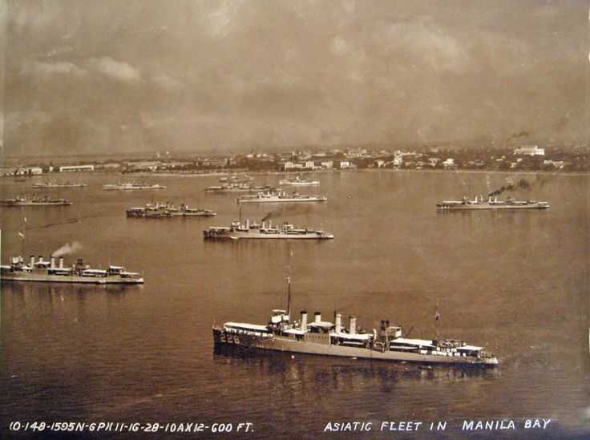
June–November 1896
In June 1896 an emissary of the Katipunan, Pío Valenzuela, visited Rizal in Dapitan. Accounts of that meeting differ. In his 1896 testimony Valenzuela said Rizal condemned an armed uprising; years later he said Rizal would accept one if Filipinos were well prepared and armed, and that he had misstated it to protect Rizal.[19] Weeks later, with the governor-general’s approval of his offer to serve as a doctor in Cuba, Rizal left Dapitan on the night of July 31 and reached Manila in early August.
In the last days of August the Katipunan was discovered and the uprising began. Rizal sailed for Spain on September 3. He reportedly declined chances to escape along the way, and he was arrested in Barcelona in early October and sent back to Manila. He arrived on November 3 and was imprisoned in Fort Santiago.
December 1896, Fort Santiago
On December 15 Rizal wrote a manifesto addressed to certain Filipinos, in which he disapproved of the uprising and its methods. He was tried by a court-martial on December 26 on charges of rebellion and sedition, plus a third charge that sources call forming an illegal association or conspiracy. His defense counsel was a Spanish army officer, Lieutenant Luis Taviel de Andrade. Among the evidence cited against him were his writings, including the dedication of El Filibusterismo.[7]
He was found guilty and sentenced to death. On December 28 Governor-General Camilo de Polavieja confirmed the sentence.
December 29–30, 1896
On December 29 Rizal’s mother and sisters visited him. Accounts say he gave his sister Trinidad a small alcohol stove and told her, in English, that there was something inside. It held the final poem he had written, a farewell to his country, to which he gave no title and which we now call “Mi último adiós.”
Many accounts also record that in the early hours of December 30 he and Josephine Bracken were married in a Catholic ceremony. Historians have debated details of the surviving documents, and this site does not settle the question.
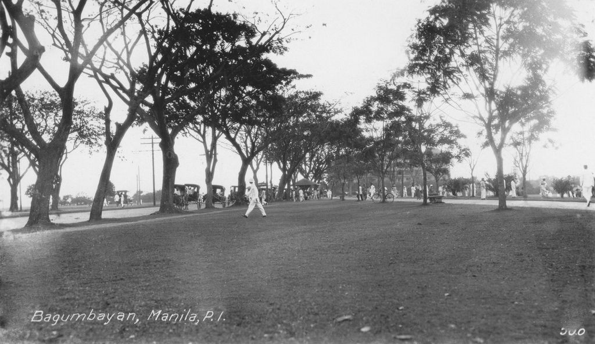
December 30, 1896, Bagumbayan
Shortly after seven in the morning, Rizal was executed by firing squad at Bagumbayan, the field outside the walls of Manila that is now Rizal Park. He was thirty-five. A line of bronze footprints at Fort Santiago today traces his final walk from his cell toward the place of execution.
The revolution that had begun in August did not end with his death, and Spanish rule in the Philippines ended two years later. Rizal had not led the uprising, and in writing he had disapproved of it. The consequences of his death, though, were out of his hands.
Katipunan emissary Pío Valenzuela visits Rizal in Dapitan.
Rizal leaves Dapitan after his offer to serve in Cuba is approved.
Arrives in Manila and waits aboard a ship in the bay.
The Katipunan is discovered and the uprising begins.
Sails for Spain aboard the Isla de Panay.
Arrested in Barcelona and sent back to Manila.
Arrives in Manila and is imprisoned in Fort Santiago.
Writes a manifesto disapproving of the uprising.
Tried by court-martial for rebellion, sedition, and illegal association.
Governor-General Polavieja confirms the death sentence.
Executed by firing squad at Bagumbayan, Manila.
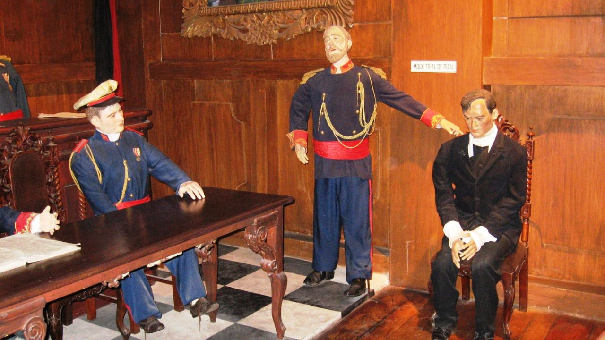
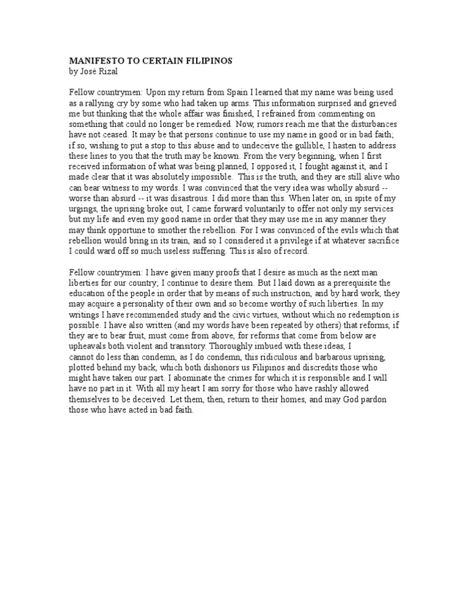
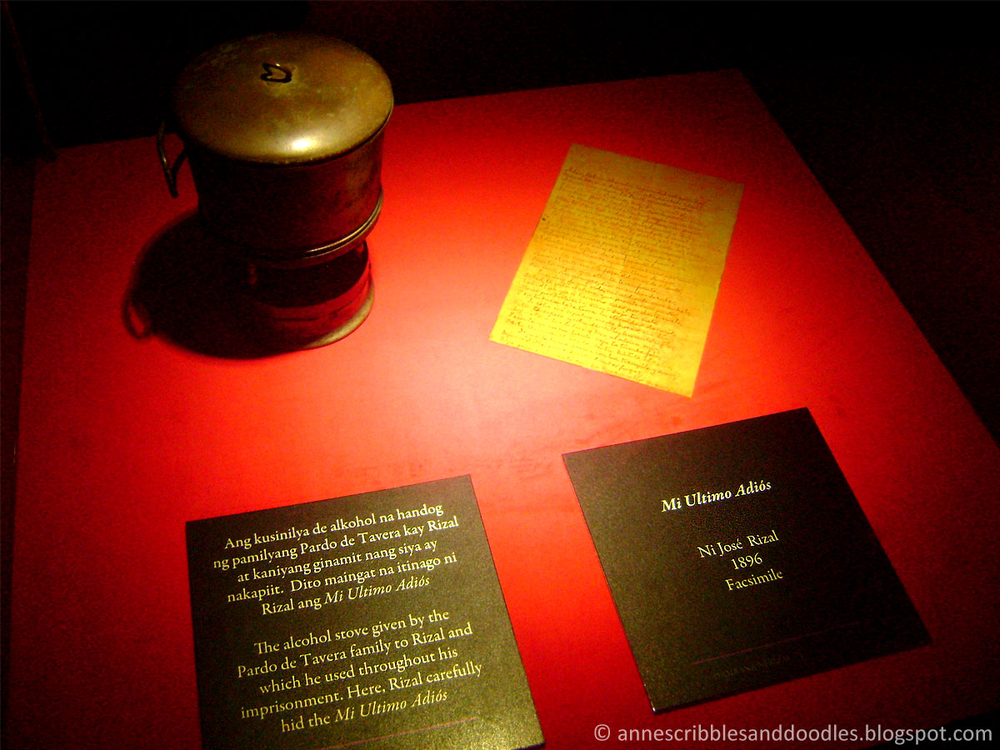
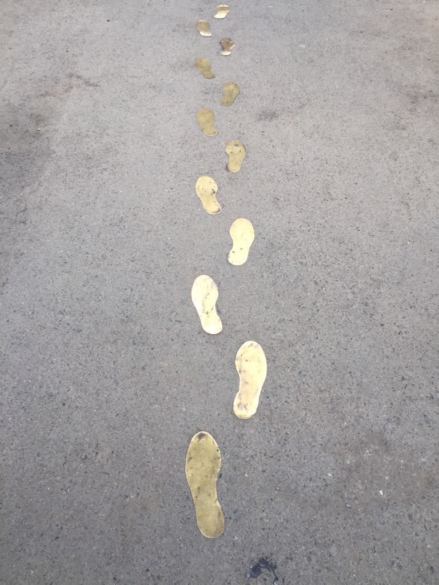
Open any card for more detail. Where accounts differ, the card says so. Sources are listed at the end of each card.
Rizal’s court-martial was held on December 26, 1896. His defense counsel was Lieutenant Luis Taviel de Andrade, a Spanish army officer. He was convicted of rebellion and sedition, along with a third charge that sources call illegal association or conspiracy, and sentenced to death. Governor-General Camilo de Polavieja confirmed the sentence on December 28.
On his last day Rizal reportedly told his sisters in English that there was something inside the alcohol stove, which held his farewell poem, and another item was reportedly hidden in his shoe. The poem first appeared in print in Hong Kong in 1897 under the title “Mi último pensamiento.” In 1902 US Representative Henry Cooper quoted an English translation during debate on the Philippine Organic Act.
Sources: [19]
Rizal was secretly buried in Paco Cemetery in an unmarked, mislabeled grave. His sister Narcisa found it and had a marker placed bearing his initials reversed, RPJ. In August 1898 she obtained American permission to exhume his remains, which were kept in an ivory urn at the family home in Binondo. On December 30, 1912, they were carried in procession to Bagumbayan, now Luneta, and the Rizal Monument, designed by the Swiss sculptor Richard Kissling, was inaugurated on December 30, 1913.
Sources: [19]
The retraction. A document attributed to Rizal retracts his anti-Catholic ideas. Some historians consider it authentic, while others, including Ricardo Pascual, whose handwriting analysis concluded it is not in Rizal’s hand, doubt it. Last words. Reports give “consummatum est,” but accounts vary. The Valenzuela accounts. Valenzuela gave different versions of his mid-1896 meeting with Rizal. This site does not take a side on these questions.
Sources: [19]
Spanish army lieutenant who served as Rizal’s defense counsel.
Governor-General who confirmed the death sentence on December 28, 1896.
Rizal’s sister, who located his grave and later retrieved his remains.
Joined revolutionary forces in Cavite after his death and died in Hong Kong in 1902.
Swiss sculptor who designed the Rizal Monument.
Rizal’s initials, reversed: his sister Narcisa had them placed so the grave could be recognized. [19]
Rudolf Virchow, at the Anthropological Society of Berlin. [19]
Filipino soldiers, with Spanish troops positioned behind them. [19]
December 30, 1913, a year after his remains were moved there. [19]
Not one act, but a pattern: how seven roles became one life, and how a nation came to remember it.
You have now met a son, a student, a traveler, a writer, a reformer, an exile, and a prisoner. The easy conclusion is that Rizal was admirable at every stage, and he may have been. That is not yet an explanation. The word “hero” asks how the parts of a life connect, and why a nation chose to remember it.
The question this storybook began with was how an ordinary Filipino’s experiences, education, writings, and choices contributed to his becoming a national hero. Here is the evidence, stage by stage, with the cautions that belong beside each stage.
1896 to today
During his lifetime Rizal was admired by many Filipinos, but he was not the only leader of the reform movement and he was a controversial figure to colonial authorities. After his death, his execution, his novels, and his final poem circulated widely. People who had chosen revolution invoked his name even though he had disapproved of the uprising.
Some sources say Emilio Aguinaldo declared December 30, 1898, a national day of mourning, and the first Rizal Day was observed that year. In 1902 the Philippine Commission, under American rule, set the anniversary of Rizal’s death as a day of observance. In 1969 the historian Renato Constantino argued that Rizal had been promoted as a safer hero than revolutionary leaders; other historians have criticized his analysis as polemical.[10] Others reply that Filipino admiration for Rizal was already real and widespread. In 1956 Republic Act No. 1425 directed schools and universities to teach his life, works, and writings, especially the two novels.[11] In 2024 the National Library of the Philippines declared the manuscripts of both novels and of “Mi último adiós” National Cultural Treasures.[15]
Looked at as a whole, four threads run through the seven stages. The first is values: a belief in fairness and in the dignity of Filipinos, formed at home and tested by what he saw. The second is knowledge: he treated learning as something to be used, in medicine, in scholarship, and in teaching. The third is voice: he chose to speak publicly and to publish, at personal risk, when quieter paths seemed closed. The fourth is service: in Dapitan he did locally what he had argued for nationally.
Heroism, then, is not best explained by a single dramatic moment. It is what happens when character, choices, and circumstances come together, and when a people later recognizes something in the person who lived through them. Both halves matter, and the second half is not Rizal’s doing. That is why the story can be told with admiration and with caution at the same time.
Open any card for more detail. This chapter’s subject is contested, so the cards present documented facts and named opinions separately.
No Philippine law, executive order, or proclamation has officially declared any Filipino historical figure a national hero, although an officially empaneled National Heroes Committee recommended Rizal. His status rests on public memory, commemorations, and laws that honor him, such as the Rizal Law.
Some sources say Emilio Aguinaldo first declared December 30 a national day of mourning, and the first Rizal Day was observed in Manila on December 30, 1898. In 1902 the Philippine Commission passed Act No. 346, which set the anniversary of Rizal’s death as a day of observance. In 1901 it also created the Province of Rizal under Act No. 137.
Sources: [19]
Renato Constantino argued that Rizal was a “US-sponsored hero,” promoted during the American period over more radical figures. Other historians have criticized his analysis as polemical. Teodoro Agoncillo suggested that Bonifacio should be honored alongside Rizal, not replace him. Benedict Anderson and Austin Coates argued that Rizal gave the Philippine revolution a genuinely national character. Each is an interpretation; the documented facts appear in the earlier chapters.
Monuments and markers honor Rizal in places he visited or that valued his example, including Wilhelmsfeld, Germany, where a small park and statue bear his name, Litoměřice in the Czech Republic, Madrid, Tokyo, and Chicago. A marker in Singapore recalls his visits in 1882, 1887, 1891, and 1896, and a blue plaque marks his London home.
Reported by some sources to have declared December 30, 1898, a national day of mourning.
Historian who argued in 1969 that Rizal was promoted as a “US-sponsored hero.”
Historian who suggested honoring Bonifacio alongside, not instead of, Rizal.
Scholar who argued Rizal gave the revolution a genuinely national character.
Spanish philosopher who called Rizal “the Tagalog Hamlet.”
No. No law, executive order, or proclamation has officially declared any Filipino a national hero, though a National Heroes Committee recommended Rizal. [19]
That schools and colleges teach Rizal’s life, works, and writings (Republic Act No. 1425, 1956). [11]
The Province of Rizal, created in 1901 under Act No. 137. [19]
The Swiss sculptor Richard Kissling, who also made the William Tell statue in Altdorf. [19]
Rizal’s world is not ours, and it would be a mistake to claim that he would have supported every opinion or movement today. What we can do is look at habits he practiced, with evidence, and ask how we might practice them in our own time.
Rizal treated learning as a duty to others. For students today that can mean asking not only “what grade do I need?” but “what can I do with what I’m learning?”
He tested a popular stereotype, the “lazy native,” against historical and social evidence. Checking claims against evidence is a skill for every feed and every group chat.
He aimed his writing at persuasion and used evidence and satire, not threats. The tools are different now, but the question of what our words do to others remains.
He joined a movement, founded a league, and served a town. Participation today can be as ordinary as voting, attending barangay meetings, or volunteering.
He published work that could, and did, endanger him. Courage in daily life usually looks smaller: speaking up against bullying or corruption, responsibly and without harming others.
In Dapitan he used his skills where he was. Anyone can ask the same question: what do I have that my community needs?
Your notes are saved only in this browser and are never sent anywhere.
Flashcards, quizzes, a timeline challenge, key terms, and the full fact bank. Every question is built from the same verified facts as the chapters, and every answer shows its sources.
Earn XP for every correct answer. Perfect scores make confetti.
Tip: cards you mark “Got it” appear less often. Arrow keys move between cards.
Eight questions, drawn from the chapter you picked above (or from all of them). You get instant feedback, the sources, and XP.
Use the arrow buttons to move each event, earliest at the top. Then check your answer.
Pluma answers questions about José Rizal, and only from this site’s verified fact bank. If the facts do not cover it, Pluma says so instead of guessing.
Pluma can still make mistakes. For anything you plan to cite, check the sources on the References page.
Where the facts, dates, quotations, and images come from, and how to check them.
The story in this storybook is written in original wording. Dates and events follow the standard biographies and primary texts below. Where scholars disagree, the chapter says so. Quotations are kept to a minimum, only a few short phrases from Rizal’s own Spanish texts, which are in the public domain, appear in quotation marks. Everything else is paraphrase. Numbers in square brackets, such as [1], point to the entries on this page.
Before you cite this site, check page numbers and exact wording in the books themselves. This project lists titles, authors, and links that were confirmed to exist, but it does not give page numbers.
The Review and Ask tabs use a fact bank of short statements. Each one lists its supporting source numbers, and you can open the bank under Review, then Fact bank. Where sources disagree (for example on the date of Rizal’s Dapitan departure or the year of his mother’s eye operation), the fact bank and chapters say so.
| Chapter | Main sources |
|---|---|
| 1. The Young Rizal | 1, 2, 3, 12 |
| 2. The Learner | 1, 2, 3, 4 |
| 3. The Traveler | 1, 3, 4, 5, 9, 16 |
| 4. The Writer | 1, 4, 5, 6, 7, 15, 18 |
| 5. The Reformer | 1, 3, 4, 8, 10 |
| 6. The Exile | 1, 2, 3, 12 |
| 7. The Final Journey | 1, 3, 4, 7, 10, 12 |
| 8. The Hero | 1, 2, 9, 10, 11, 15 |
| Review and Ask | Every fact lists its own sources; see Review, then Fact bank. Main sources: 1, 3, 19 |